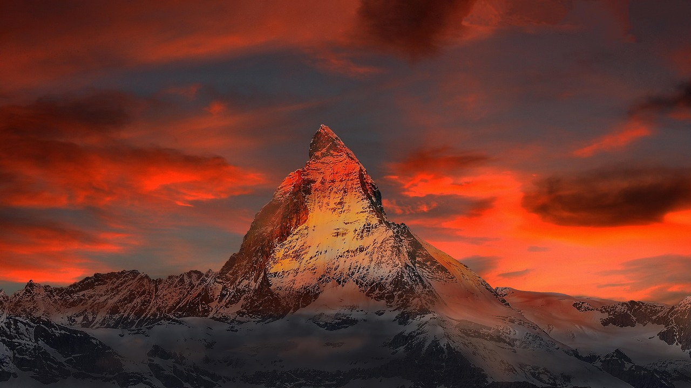

Introduction
太行山巅的云端仙境
天界山景区位于新乡市辉县上八里镇，是南太行山水旅游度假区的重要组成部分。景区以"云峰画廊"和"老爷顶"为核心，集自然风光与人文历史于一体，是观赏南太行全景的最佳地点。
老爷顶海拔1570米，因山顶建有真武庙（供奉真武大帝，民间称"老爷"）而得名。相传明代永乐皇帝曾在此修行，故又称"天下第一铁顶"。山顶视野极佳，晴天时可远眺黄河如带，俯瞰太行群峰如波涛起伏。
云峰画廊是一条环山悬崖栈道，全长约8公里，沿途设有多个观景台，可360度欣赏太行山的壮美风光。栈道部分段落铺设了玻璃栈道，行走其上如悬空漫步，惊险刺激。天界山还有回龙挂壁公路，是"太行精神"的重要见证。
Visitor Info
🕐
建议时长
3-4小时
🎫
门票
联票¥120（三景区）
📍
地址
辉县·上八里镇
🚌
交通
毗邻八里沟景区
⏰
开放时间
08:00-17:30
🏷️
建议
与八里沟联游
Route
游览路线推荐
🚪 景区入口 → 回龙挂壁公路
乘景区交通车穿越回龙挂壁公路，这是继郭亮之后南太行又一条著名的挂壁公路。沿途在观景台可停车拍照，感受悬崖公路的震撼。
⛰️ 登老爷顶（1.5h）
可选择徒步登山或乘坐索道上老爷顶。山顶的真武庙历史悠久，香火鼎盛。登顶后360度俯瞰太行群峰，视野极佳。
🔄 云峰画廊环线（2h）
沿悬崖栈道环绕老爷顶一周，全程约8公里。途经多个观景台和玻璃栈道段，一步一景，是拍照的绝佳线路。
Gallery
天界山风光
